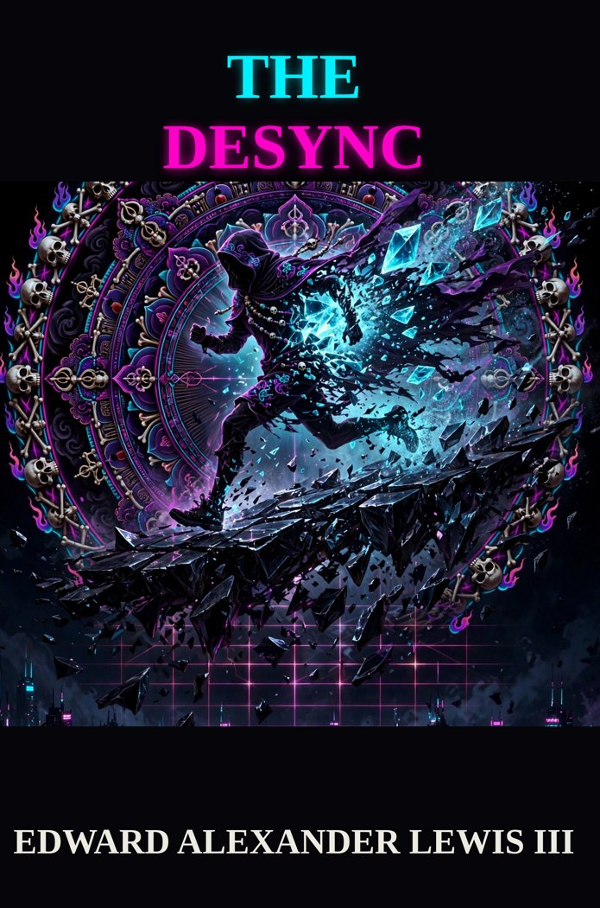
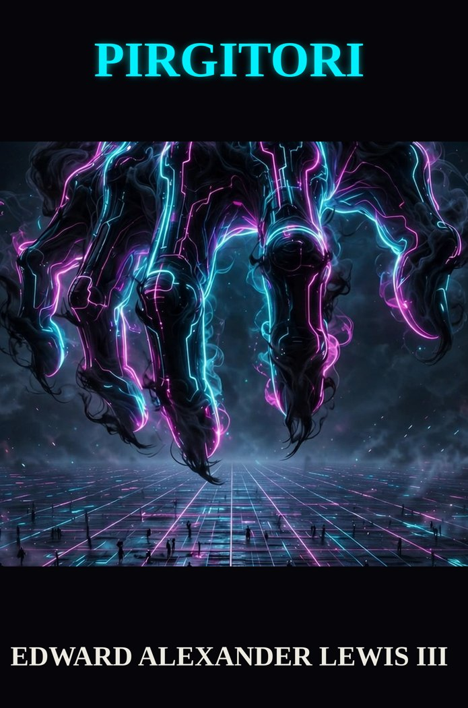

Ascension33
THE ARCHIVES — BOOKS
Book One — THE DESYNC

The Glove never forgets. It just stops admitting you were ever there.
Kael is a Tailscale runner in a city of eight million souls, riding the slipstream of cargo trams through a world that refreshes every thirty-three beats — a world run by the mesh, watched by the Spire, and corrected by the Arbiters, who can unwrite a person between one raindrop and the next. His work is simple: don’t be seen, don’t be late, don’t ask what’s in the case.
Then the limp in the weather starts matching the limp in his own blood. Static gathers under his skin. The mesh flags him ANOMALY — and the things that hunt anomalies do not negotiate.
To survive, Kael will have to learn the forbidden arithmetic of the nine-grid, the anchor that holds a soul together when reality lets go, and the terrible meaning of the desync meter climbing toward one hundred. Beside him: Vesper, the only ally who refuses to look away.
THE DESYNC is Book One of the Ascension33 Trilogy — a dark-fantasy epic of correction, defiance, and the thirty-third beat that changes everything.
Ebook $2.99 · Paperback $12.99 · Expanded edition, 333 pages · Coming to Kindle
Book Two — PIRGITORI

The mesh has a name, and the name is not a metaphor. Book Two of the Ascension33 Trilogy — the story climbs from the streets to the system that runs them.
The trilogy is complete. Coming to Kindle.
Book Three — THE SOURCE
Every correction, every anchor, every beat of the thirty-three leads here. Book Three of the Ascension33 Trilogy — the climb ends at the Source.
The trilogy is complete. Coming to Kindle.